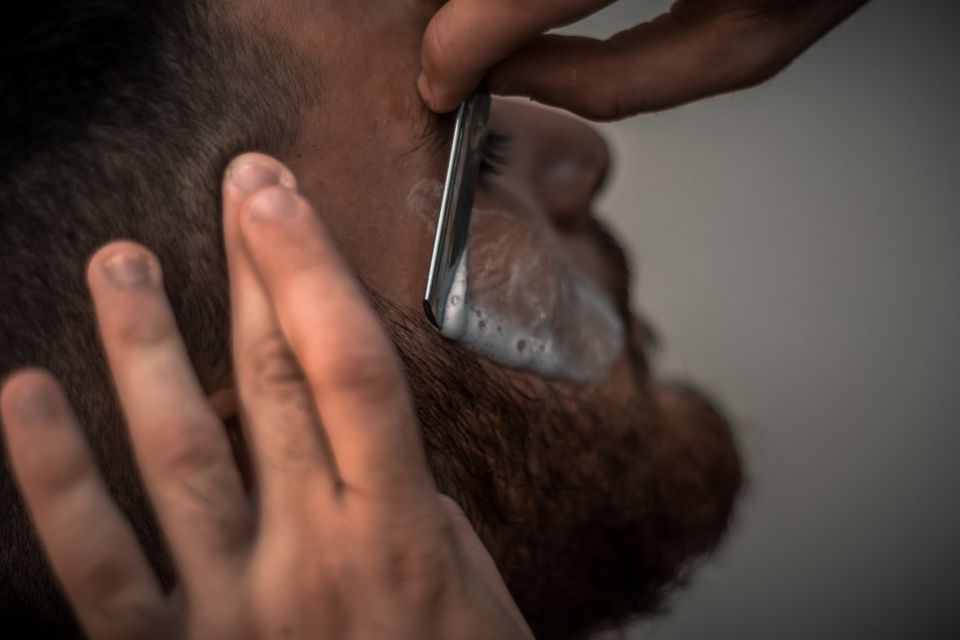
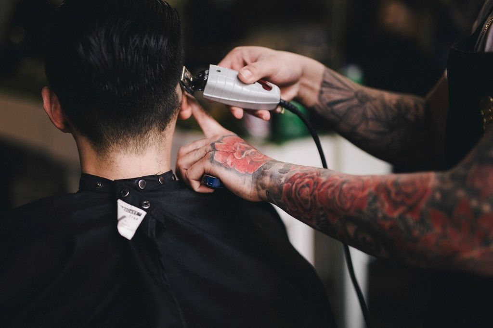
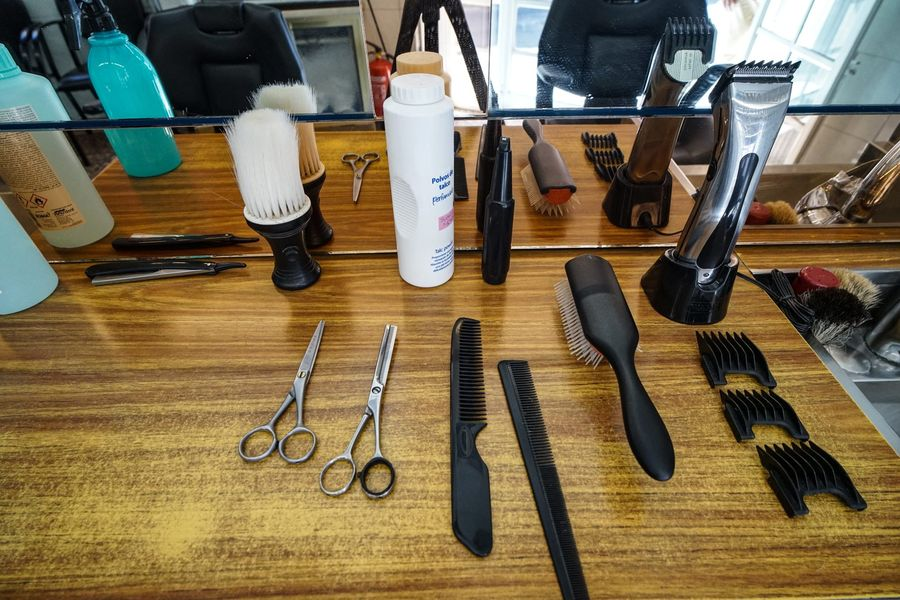

Gece yarısına kadar açık berber
Salon Ahmet Barbers, Mecidiyeköy'de hafta içi 10:50'den gece 00:30'a, cumartesi 01:00'e kadar açık. Saç kesimi, sakal tıraşı ve yüz bakımı için mesainin bitmesini beklemeniz yeter; akşam yemeğinden sonra da gelebilirsiniz.
Pazartesi–Cuma 10:50–00:30, Cumartesi 10:50–01:00, Pazar kapalı.
Bu akşam için saat sor
Bir saate dokunun, mesajınız kendiliğinden hazırlansın. Uygun olup olmadığını salon WhatsApp'tan yanıtlar.
Gönderilecek mesaj
Merhaba, bu akşam saat 20:00 için saç kesimi randevusu rica ediyorum. Uygun musunuz?
Lamba 10:50'de yanar, gece yarısından sonra söner
Hafta içi kapanış 00:30, cumartesi 01:00. Pazar günü salon kapalı. Şerit İstanbul saatiyle bugünü gösterir; beyaz çizgi şu an, kırmızı çizgi gece yarısı.
Pazartesi–Cuma 10:50–00:30, Cumartesi 10:50–01:00, Pazar kapalı.
Koltukta neler yapılır
Nasıl bir kesim istediğinizi anlatın ya da telefonunuzdan bir fotoğraf gösterin; gerisi makasın, makinenin ve usturanın işi.
Saç kesimi
Makasla, makineyle ya da ikisi birlikte. Günlük kullanımınıza ve saçınızın yönüne göre.
Geçişli kesim
Enseden yukarı kademe kademe kısalan yanlar. Geçişin nereden başlayacağına siz karar verin.
Sakal tıraşı
Ustura ile klasik tıraş, sakal boyunu kısaltma, yanak ve boyun çizgisini netleştirme.
Yüz bakımı
Maske, buhar ve temizlik gibi adımlar. Kapsamını randevu alırken sorun, bilgi verelim.
Çocuk tıraşı
Küçük beyler için sabırlı, acele ettirmeyen bir kesim.
Damat tıraşı
Düğün ve özel günlerden önce randevulu hazırlık. Günü ve saati önceden konuşalım.
Hizmetlerin güncel kapsamını ve ücretini salon bildirir; yazmanız ya da aramanız yeterli.
Geç saat, acelesiz tıraş
Berbere gitmek çoğu zaman mesai saatine sıkışır. Burada sıkışmıyor: kapı öğleden önce açılıyor, gece yarısını geçince kapanıyor. Günün hangi diliminde rahatsanız o zaman gelin.
- 19:00İşten çıkıp eve uğramadan gelmek isteyenler için.
- 22:00Akşam yemeğini, maçı ya da çocukların uykusunu bekleyenler için.
- 23:30Ertesi sabah toplantısı, düğünü ya da yolculuğu olanlar için.
- 00:30Hafta içi kapanış. Bu saate yakın gelecekseniz önce yazıp haber verin.

Google'da 717 değerlendirme
Salonun Google Haritalar'daki puanı 5,0. Koltuktan kalkanların ne yazdığını kaynağından okuyun.

Tezgâhtaki bakım ürünleri
Salonda berber malzemeleri ve bakım ürünleri de bulunur. Kil ile pomad arasındaki fark ne, ince telli saça hangisi yakışır? Kısa bir rehber ve üç soruluk bir ürün seçici hazırladık.
Sık sorulanlar
Randevu almak şart mı?
Sırayı ve uygun saati en doğru salon bilir. WhatsApp'tan gün ve saat yazın, uygunluğu size bildirsinler. Yukarıdaki “saat sor” düğmeleri mesajı sizin yerinize hazırlar.
Gece en geç kaçta gelebilirim?
Kapanış hafta içi 00:30, cumartesi 01:00. Kapanışa yakın bir saatte gelecekseniz, işleminizin yetişip yetişmeyeceğini önceden sormanızı öneririz.
Pazar günü açık mı?
Hayır, pazar günü salon kapalı. Haftanın diğer altı günü 10:50'de açılır.
Kesim ve sakal ne kadar sürer?
İşleme ve o anki yoğunluğa göre değişir. Berberlerde kesim ve sakal birlikte çoğu zaman 30–45 dakika tutar; net süreyi randevu alırken sorabilirsiniz.
Ücretler ne kadar, kart geçiyor mu?
Güncel ücretleri ve ödeme seçeneklerini salon bildirir. İletişim sayfasındaki hazır sorulardan birine dokunup WhatsApp'tan sorabilirsiniz.
Mecidiyeköy'de, lambası yanan dükkân
Pazartesi–Cuma 10:50–00:30 · Cumartesi 10:50–01:00 · Pazar kapalı